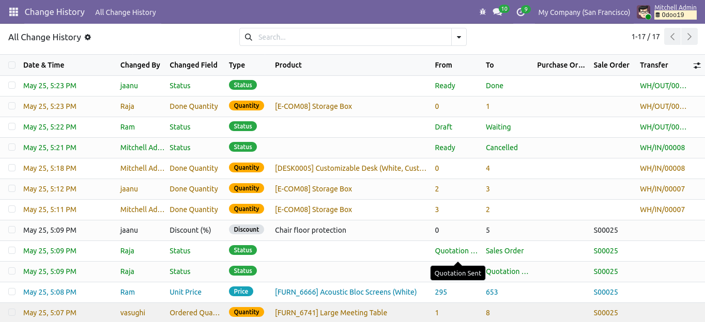
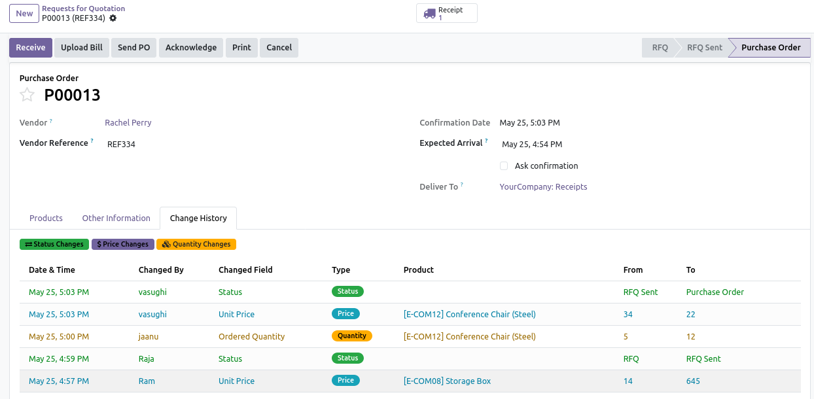
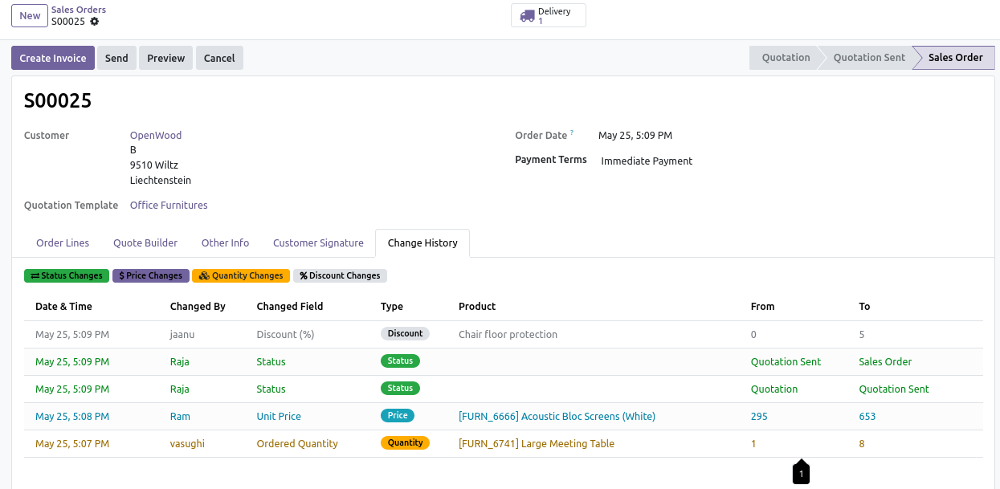
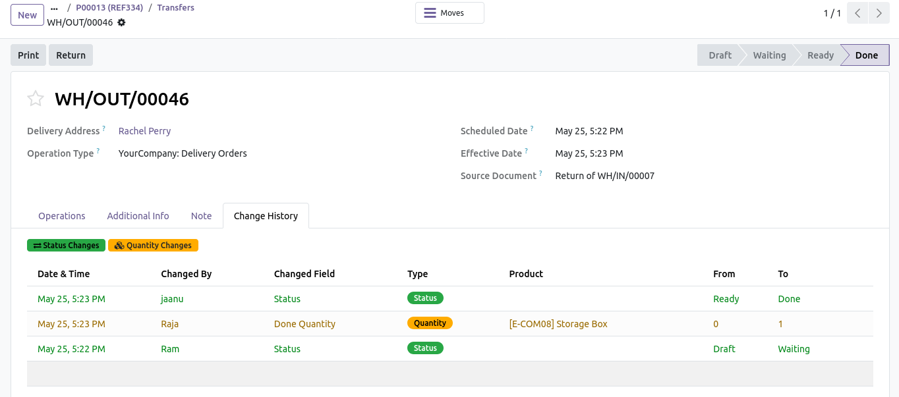

|
⚙
Automatic Tracking
No manual configuration required after installation.
|
↻
Change History Tab
See full audit details directly inside documents.
|
◉
Global History Menu
Search, filter, and group all changes centrally.
|
☰
Line-Level Audit
Tracks status, quantity, price, and discount changes.
|
Every time an employee changes a Status, Price, Quantity, or Discount on a Purchase Order, Sales Order, or Stock Transfer, the module records it automatically. No setup. No configuration. Just install and it works.
|
Chatter-Based Audit Trail
Show old and new values directly where users already work.
|
Searchable Log History
Review tracked events later across configured models from a dedicated view.
|
|
One2many Line Tracking
Preserve line-level changes that often get missed in normal review flows.
|
Clean User Experience
Premium layout that reads clearly in Odoo Apps Store.
|
The order below is arranged for a strong sales flow: global view first, then document-level tracking, then setup and FAQ.




|
1
|
Install the module - no configuration required. |
|
2
|
Open any Purchase Order, Sales Order, or Inventory Transfer. |
|
3
|
Click the Change History tab in the notebook. |
|
4
|
Review the complete colour-coded log of all changes made by your team. |
|
5
|
Use the Change History menu under Purchase / Sales / Inventory for a global view. |
|
Odoo 19
Fully compatible with Odoo 19. Version string: 19.0.1.0.0.
|
Dependencies
purchase, sale_management, stock, hr - standard Odoo modules.
|
Security
All users can read. Only administrators can modify or delete log entries.
|
|
Performance
Context guard prevents recursive writes. Only real changes are logged.
|
Price
No subscription. No hidden fees.
|